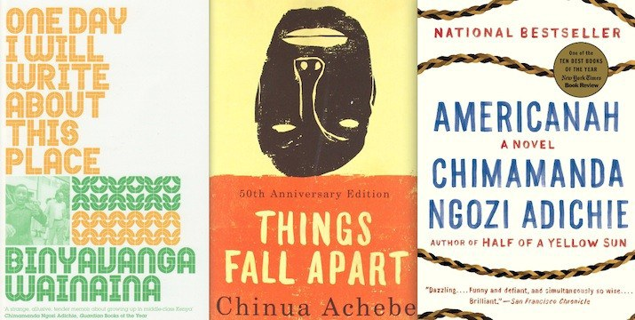
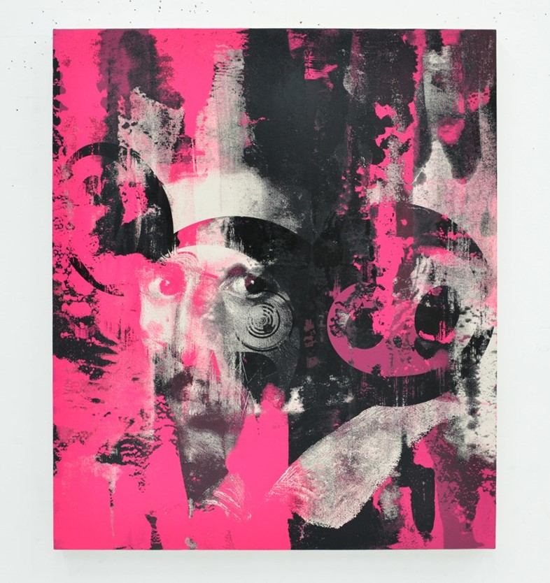
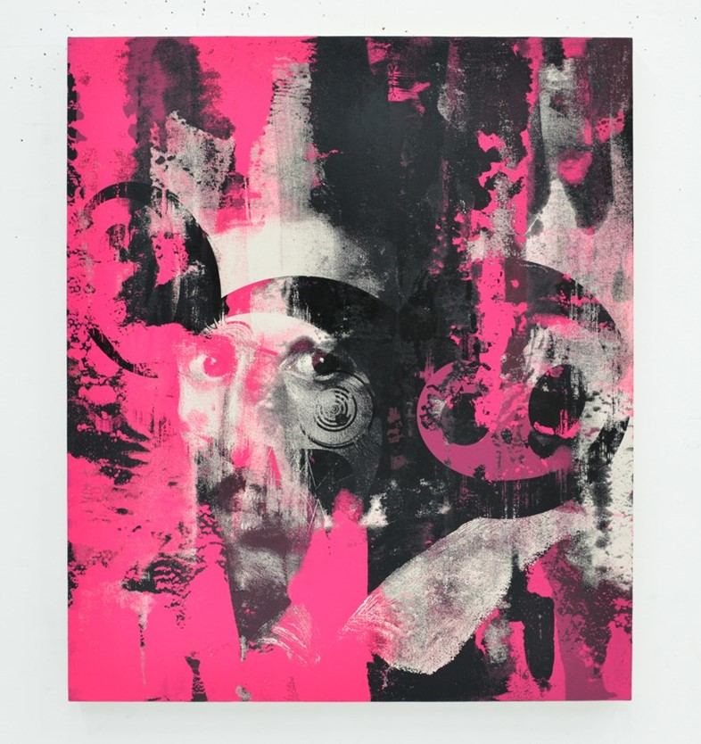

My name is Raymond Ezekiel. I am from the country of Nigeria in West Africa. I currently attend Illinois Institute of Technology where I major in Information Technology & Management. Before attending Illinois Institute of Technology, I attended Luther college in Iowa where I was pursuing my bachelors in Computer Science. After a year, I came back to Chicago to attend Harold Washington College
I have a variety of interests, some of which are listed below:"
Below are visuals that represent my interests:

 
